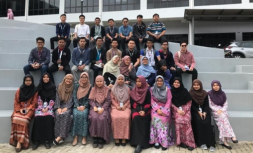

Academic info : I finished my diploma as a Computer Science student. I can say that I graduated in flying colours. I got dean list in my last semester as well.
Out of 5 semesters in my diploma year, I managed to got dean list in 3 semesters. I'm proud of my hard work. Working hard won't always lead to the exact things we desire.
There are many things I've wanted that I haven't always gotten. But, I have a great satisfaction in the blessings from my family, who instilled a great work ethic in me
both personally and professionally. On top of that, I decided to continue my degree in Computer Science in hope to got more knowledge in this course to utilise into my working career.
“Dream as if you’ll live forever, live as if you’ll die today.”
“Don’t be afraid of failure. This is the way to succeed.”
-Lebron James
Working Experience : Phone Repair Technician in J&S Mobile Solution , Cashier in restaurant, Internship in W R Grace Specialty Chemicals (Malaysia) Sdn. Bhd. as a
Monitor on company's server such as backup data etc.

"Majlis Kecermelangan Akademik" for dean list students